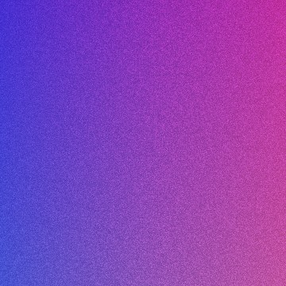
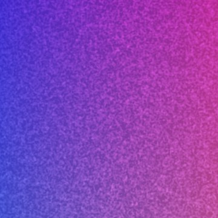
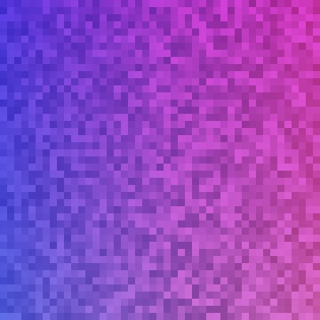
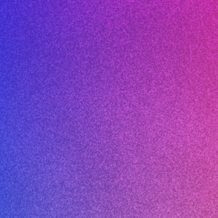
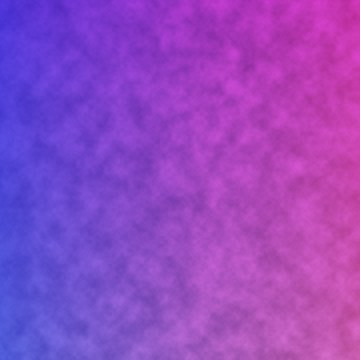
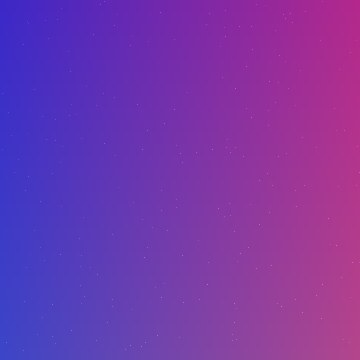
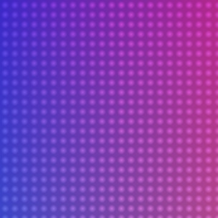
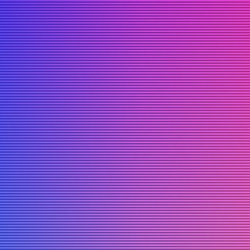

Free grain texture PNG: transparent and seamless
A 1024 × 1024 noise overlay with a transparent background, in white and in black. It tiles with no visible seam, so it covers a background of any size. Below, preview it on your own colours, then copy the CSS or follow the Figma, Photoshop or Canva steps.
Download PNG (1.4 MB)

Download PNG (1.4 MB)

License: free for personal and commercial projects, including client work. No attribution needed. Please don't re-share or sell the file itself as a texture or stock asset; link to this page instead.
Preview it on your colours
This is the live texture, layered the same way the CSS below does it. Change the settings and the CSS updates to match.
At 1024 px each texture pixel is one CSS pixel, which is the safest default. On Retina screens, 512 px gives finer grain that is still sharp. On ordinary 1× screens, sizes below 1024 px soften the grain.
How to add grain in CSS
Put the texture on a pseudo-element that sits over the element. Then the grain blends with whatever is underneath (gradient, photo or video) and never blocks clicks:
.grainy { position: relative; isolation: isolate; }
.grainy::after {
content: "";
position: absolute;
inset: 0;
background: url(grain-texture-white-1024.png) 0 0 / 1024px repeat;
mix-blend-mode: overlay; /* or soft-light */
opacity: .35;
pointer-events: none;
}isolation: isolatelimits the blend to this element. Without it, Overlay also mixes with the page behind it.- For a whole-page grain, use
position: fixedon abody::afterinstead. It's one layer, so it stays cheap even on long pages. - If you'd rather have no image request at all, the SVG
feTurbulencerecipe generates noise inline. A PNG gives you the same grain in every browser and is lighter to repaint on large animated backgrounds.
Figma
Add a rectangle over your design, set its fill to Image, choose this PNG and switch the image mode from Fill to Tile. Then set the layer blend mode (the dropdown next to layer opacity) to Overlay or Soft light, at 20–50% opacity. Figma also has a built-in Noise effect. The PNG is useful when you want the exact same grain in Figma and in production CSS.
Photoshop
Open the PNG and choose Edit → Define Pattern. In your design, add Layer → New Fill Layer → Pattern, pick the grain pattern and set the layer's blend mode to Overlay or Soft light. Change Scale in the pattern dialog to make the grain finer or coarser. Because it's a fill layer, it extends to any canvas size with no seams.
Canva, Keynote and Google Slides
Upload the PNG, place it over your design and stretch it to cover the page. Lower its transparency to around 15–35%. Use the white grain on dark designs and the black grain on light ones. If your editor offers blend modes for images, Overlay or Soft light looks best. If not, plain transparency works because the grain is already on a transparent background.
A note on video
A still grain image on top of moving footage looks like dust on the lens, not film grain, because real grain changes every frame. For video, offset the overlay's position randomly every frame (most editors can wiggle position), or use an animated grain clip.
8 overlays at 2K–4K, if you need more than one look
The free file is the "fine grain" overlay from GRAIN + NOISE, a pack of 8 seamless transparent overlays: fine, soft, coarse and film grain at 2048 px, and paper, dust, halftone dots and scanlines at 4096 px. Each one tiles, and each is white on transparent so the blend modes above work as-is.








Same license as the free file: commercial use, no attribution. The overlays are generated procedurally with numpy (frequency-domain noise on a torus). They aren't AI image-model output.
Also free: grainy gradient wallpapers (4K + iPhone) · ogkit (OG image maker) · AppShot (App Store screenshots) · Favikit (favicons)